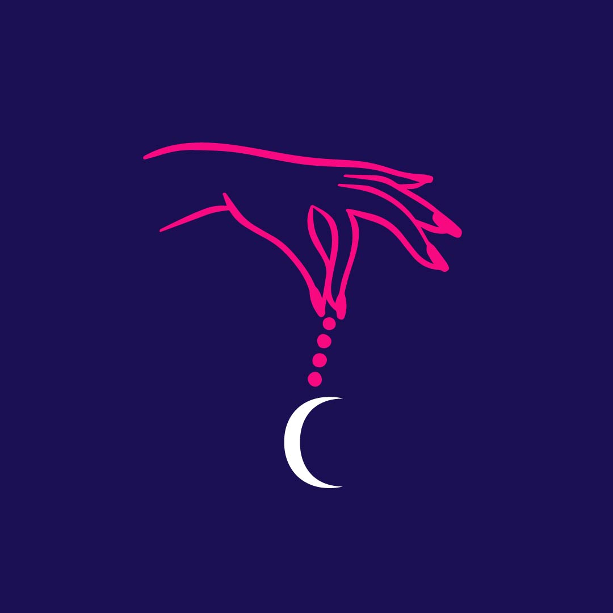

Soy Cate, Tarotista, Numeróloga
✦ Cursos 🌙 La Fórmula — Curso de Tarot RiderInicio 21 de julio 🃏 Curso Oráculo Lenormand
Inscripciones cerradas ✦ Lecturas 🔮 Lectura de Tarot Personalizada ✨ Tarot + Numerología Anual 2026 ✦ Contacto & Más 💬 Contactarme por WhatsApp 🌟 Eventos Privados 🌐 Mi Sitio Web
